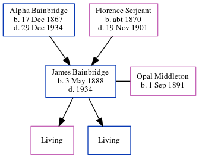

James William Bainbridge 1888 - 1934
[ Home ] | [ Calendar ] | [ Surnames Index ] | [ Census Index ] | [ Family History ]The eldest of 3 children of Alpha Bainbridge and Florence Serjeant, James Bainbridge, the third cousin three-times-removed on the mother's side of Nigel Horne, was born in Fort Wayne, Allen, Indiana, USA on May 3, 18881,2,3 and. He married Opal Middleton (with whom he had 2 surviving children Dorothy H and Robert A) in Allen, Indiana, USA on Dec 14, 19082.
During his life, he was living in Allen on Jun 1, 19001; and at his birthplace on Apr 1, 19304. He served in the military from 1917 to 1918 (world War I Draft Registration Cards).
He died in 1934.
Parents
- Alpha Alfred was born on Dec 17, 1867
- Florence G was born c. 1870
Citations
- US Census 1900 - Findmypast (was the son of the head of the household)
- United States Marriages - Findmypast
- World War I Draft Registration Cards - Findmypast
- US Census 1930 - Findmypast (was age 41 and the head of the household)
Media
World War I Draft Registration Cards - USM/WWIDR/1669547702
United States Marriages - R_1072362259
United States Marriages - FS/MAR/32838732/1
United States Marriages - R_328065347/1
Family Tree
Generated by ged2site. Last updated on Jun 11, 2024